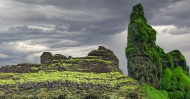
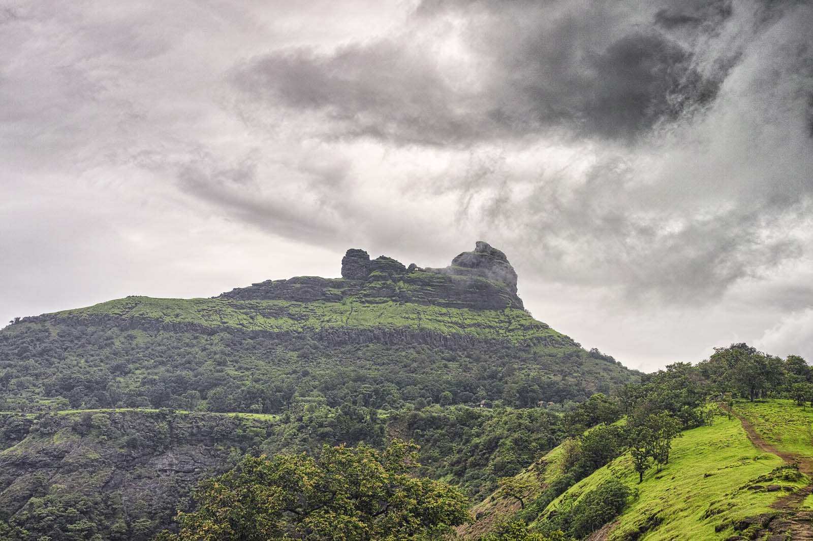

इर्षालगड किल्ला
Location : Click Here For Google Map
- माहिती
- इर्षालगड हा एक सुंदर आणि रोमांचक ट्रेकिंग ठिकाण आहे जो रायगड जिल्ह्यातील अलिबाग परिसरात स्थित आहे. किल्ल्याची उंची सुमारे ३२५० फूट असून, त्यावर चढाई करणारा ट्रेक त्याच्या कठीणतेसाठी प्रसिद्ध आहे. किल्ल्याचे अस्तित्व अज्ञात असले तरी, त्याचे महत्त्व वाढले आहे कारण त्याच्या शिखरावरून आसपासच्या परिसराचे आणि सह्याद्री पर्वतरांगेचे अप्रतिम दृश्य दिसते. इर्षालगडाच्या शिखरावर पोहोचण्यासाठी, ट्रेकरना अरुंद आणि खडकी पायऱ्यांवरून चढाई करावी लागते, ज्यामुळे हा ट्रेक इतरांपेक्षा जास्त आव्हानात्मक होतो. किल्ल्याच्या पायथ्याशी असलेल्या जंगल आणि डोंगर रांगा ट्रेकरसाठी एक आदर्श साहस अनुभव बनवतात. ट्रेकिंग करताना, गडावर शिल्लक असलेल्या काही पाण्याच्या टाक्या आणि जुन्या किल्ल्याच्या अवशेषांचीही भेट होऊ शकते. तसेच, किल्ल्याच्या शिखरावरून इर्षालगड जवळील प्रबळगड, मणिकगड आणि इतर किल्ल्यांचे दृश्य देखील पाहता येते. इर्षालगड ट्रेक हा साहसी ट्रेकरांसाठी एक आव्हानात्मक आणि अद्वितीय अनुभव देणारा असतो, ज्यामुळे तो ट्रेकिंग प्रेमींमध्ये एक आकर्षण ठरतो.
Explore the historical beauty

